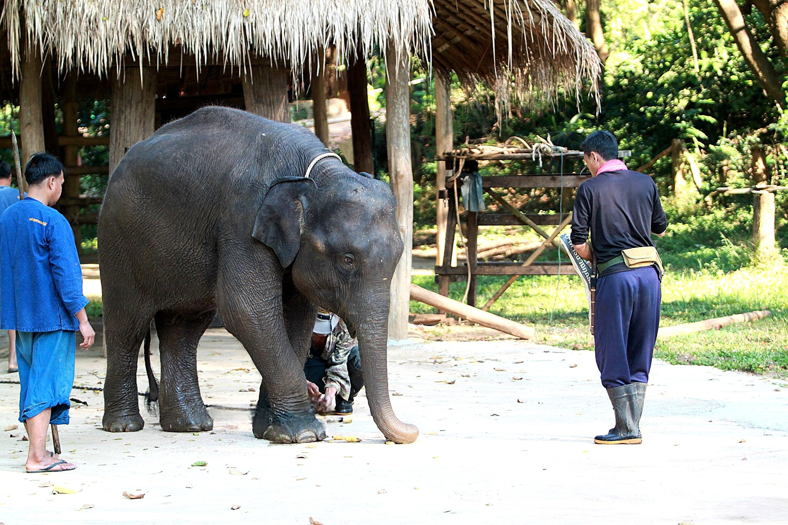

เกี่ยวกับ ศูนย์อนุรักษ์ช้างไทย
ศูนย์อนุรักษ์ช้างไทย (Thai Elephant Conservation Center - TECC) เป็นศูนย์อนุรักษ์ช้างแห่งชาติที่สำคัญและใหญ่ที่สุดในประเทศไทย ก่อตั้งขึ้นเมื่อปี พ.ศ. 2536
ศูนย์แห่งนี้มีพันธกิจในการอนุรักษ์และดูแลช้างไทย รวมถึงการศึกษาวิจัย การรักษาพยาบาล และการให้ความรู้แก่สาธารณชนเกี่ยวกับวิถีชีวิตของช้าง เป็นแหล่งเรียนรู้ที่สำคัญสำหรับผู้ที่สนใจ

🐘 กิจกรรมที่น่าสนใจ
- การแสดงของช้าง: ชมความฉลาดและทักษะที่น่าทึ่งของช้างไทย
- โรงพยาบาลช้าง: เรียนรู้การรักษาพยาบาลและฟื้นฟูสุขภาพช้าง
- โรงเรียนฝึกช้าง: ชมการฝึกสอนระหว่างควาญช้างและช้าง
- อาบน้ำช้าง: ร่วมกิจกรรมอาบน้ำให้ช้างในลำน้ำธรรมชาติ
- ให้อาหารช้าง: สัมผัสความน่ารักและป้อนอาหารช้างด้วยตัวเอง
- พิพิธภัณฑ์ช้าง: ศึกษาประวัติศาสตร์และความสำคัญของช้างในสังคมไทย
โปรแกรมท่องเที่ยวแนะนำ

🎭 โปรแกรมชมการแสดงช้าง
ระยะเวลา: 2-3 ชั่วโมง
กิจกรรม:
- ✓ ชมการแสดงความสามารถพิเศษของช้าง
- ✓ เรียนรู้ประวัติและความสำคัญของช้างไทย
- ✓ ถ่ายภาพที่ระลึกกับน้องช้าง
- ✓ ร่วมกิจกรรมให้อาหารช้าง
ราคาโดยประมาณ: 200-300 บาท
🛁 โปรแกรมอาบน้ำช้าง
ระยะเวลา: ครึ่งวัน (4-5 ชั่วโมง)
กิจกรรม:
- ✓ เรียนรู้วิถีชีวิตช้างและการดูแลเบื้องต้น
- ✓ กิจกรรมให้อาหารช้าง
- ✓ สนุกกับการอาบน้ำให้ช้างในแม่น้ำ
- ✓ เดินเล่นกับช้างท่ามกลางธรรมชาติ
- ✓ บริการอาหารกลางวันภายในโปรแกรม
ราคาโดยประมาณ: 1,500-2,000 บาท


ข้อมูลสำหรับผู้เข้าชม
📍 ที่ตั้ง: ต.ห้างฉัตร อ.ห้างฉัตร จ.ลำปาง
⏰ เวลาเปิด-ปิด: เปิดทุกวัน 08:00 - 17:00 น.
💰 ค่าเข้าชม: 50 บาท (ไม่รวมค่ากิจกรรมพิเศษ)
🚗 การเดินทาง: ห่างจากตัวเมืองลำปางประมาณ 37 กม. (ใช้เวลาเดินทางประมาณ 45 นาที)
📞 คำแนะนำ: ควรจองกิจกรรมล่วงหน้า โดยเฉพาะในช่วงวันหยุด
👕 การเตรียมตัว: สวมเสื้อผ้าสบาย รองเท้าหุ้มส้น และเตรียมชุดสำรองหากทำกิจกรรมทางน้ำ
💡 เคล็ดลับสำหรับการเยี่ยมชม
- ควรเดินทางมาถึงช่วงเช้าเพื่อเลี่ยงแดดร้อนและมีเวลาทำกิจกรรมได้ครบถ้วน
- เลือกสวมเสื้อผ้าที่คล่องตัว เหมาะสำหรับกิจกรรมกลางแจ้ง
- เตรียมกล้องถ่ายรูปเพื่อบันทึกความประทับใจ
- ปฏิบัติตามคำแนะนำของเจ้าหน้าที่อย่างเคร่งครัดเพื่อความปลอดภัย
- ร่วมกันรักษาสิ่งแวดล้อมและไม่ทิ้งขยะในพื้นที่อนุรักษ์
บรรยากาศภายในศูนย์อนุรักษ์ช้าง